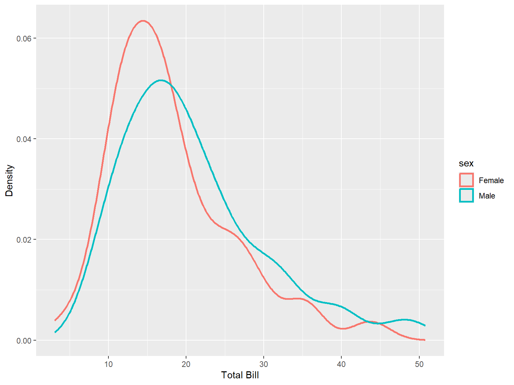

# Loading tidyverse package
library(tidyverse)
# Loading dataset
tips = read_csv(
'https://raw.githubusercontent.com/mwaskom/seaborn-data/master/tips.csv'
)4 Data Visualization
Learning Objectives of the Chapter
At the End of the Chapter, Students should be Able to -
Understand the Meaning of Visualization
Recognize the Importance of Visualization
Explore Different R and Python Packages for Visualization
Prepare Different Types of Visualizations for Different Types of Data
Prepare Interactive Visualization
4.1 What is Visualization?
Visualization refers to the graphical presentation of data. Visualization involves using charts, graphs, maps, and other visualization tools. Visualization enables to understand trends, partterns, and outliers, if any, in the dataset. Visualization is very critical in data analytics process in that it allows complex data to be presented in a way that is easy to understand and interpret. Visualization tools can range from simple charts to more sophisticated advanced tools like interactive dashboards.
4.2 Importance of Visualization
Mastering visualization technique is important because it allows to simplify story telling of complex data, identify pattern, enhance communication and so on.
Simlifying Complex Data: More complex data can be made simpler and understandable using visualization, thus enabling decsion makers to understand key insights and make informed decisions.
Identifying Trends and Patterns: Using visualization, patterns and trends can be easily identified in the data, which further help to identify correlation between variables.
Improving Communication: Visualization is very effective to communicate findings from the data to stakehloders in a simple and understandway way. Therefore, users who lack technical expertise can easily understand the main point of data.
Supporting Effective Decision Making: Visualization emphasizes important insights, thus helping organizations make data-driven decisions. Moreover, visualization makes the data more understandable and accessible, thus supporting strategic planning and operational improvements.
Detecting Outliers and Anomalies: Effective visualization tools and techniques make it easy to spot outliers and anomalies in the data. These unusual data points can be important for identifying errors, fraud, or opportunities for further investigation.
Engaging Audience: Interactive and visually appealing visualization can engage audience and enhance effective delivery of main points. Visualization tools like interactive dashboards allow users to explore the data themselves, thus leading to deeper understanding of the data.
Encouraging Exploration: Data visualization tools often allow for interactive exploration of data. Users can drill down into specific data points, filter relevant data, and view different dimensions of the data, thus leading to new iinsights and discoveries.
4.3 Visualization Packages in R and Python
ggplot2 is a powerful package for visualization in R. In addition, some other packages enhance the functionalities of ggplot2. These packages include - gganimate, ggthemes, ggpubr, ggridges, ggmap, ggrepel, ggextra, ggpattern, ggcorrplot and so on.
In Python, matplotlib and seaborn are two of the powerful packages for visualization. Additionally, plotly, plotnine, altair, and bokeh are some other python packages that enhances visualization in python.
# Loading Necessary Python Packages
import seaborn as sns
import matplotlib.pyplot as plt
import pandas as pd
import numpy as np# ggplot style
plt.style.use('ggplot')
# Loading dataset
tips = sns.load_dataset('tips')4.4 ggplot - Grammar of Graphics
In ggplot, a plot consists of at least four elements -
Data - the data frame
Aesthetic Mappings - aesthetic mappings map variable from the data frame to different kinds of aesthetics such as x coordinate, y coordinate, color, shape, size and so on.
Coordinate System - the positioning of points
Geom - geoms are geometirc objects such as points or lines.
You can also use cheatsheet of ggplot to know more about the ggplot. Another good source to learn more about visualization in R is The R Graph Library. Similarly, for Python, you can use The Python Graph Library.
4.5 Types of Visualization
4.5.1 Bar Diagram (Bar Plot)
4.5.1.1 One Categorical Variable
tips |>
count (sex) |>
ggplot(mapping = aes(x = sex, y = n))+
geom_bar(stat = 'identity', width = 0.5, fill = "orangered3") +
labs(x = 'Sex', y = 'Total Observations')Either of the the following code will also produce the same visualization.
tips |>
ggplot(mapping = aes(x = sex))+
geom_bar(width = 0.5, fill = "maroon") +
labs(x = 'Sex', y = 'Total Observations')tips |>
ggplot(mapping = aes(x = sex))+
stat_count(width = 0.5, fill = "maroon") +
labs(x = 'Sex', y = 'Total Observations')sns.countplot(data = tips, x = "sex", width=0.5)
plt.xlabel('Sex')
plt.ylabel('Total Observations')4.5.1.2 One Categorical Variable and One Continuous Variable
Barplot can also be used for two variables - both discrete (categorical) variables or one discrete (categorical) and one continuous variable. Below is bar plot for one discrete (categorical) and one continuous variable.
tips |>
group_by(sex) |>
summarize(total_bill = mean(total_bill)) |>
ggplot(aes(x = sex, y = total_bill)) +
geom_col(width =0.6, fill = "pink") +
labs(x = "Sex", y = "Total Bill") +
geom_text(aes(label = round(total_bill,2)), vjust = -0.2)The following code will produce the same results.
tips |>
ggplot(mapping = aes(x = sex, y = total_bill))+
geom_bar(stat = 'summary', fun = "mean", position = "dodge",
width = 0.60, fill = "pink") +
labs(x = "Sex", y = "Total Bill")sns.barplot(data = tips, x = "sex", y = "total_bill",
width= 0.5,
errorbar= None)
plt.xlabel('Sex')
plt.ylabel('Total Bill')The following code will add text value on the bars in barplot.
ax = sns.barplot(data = tips, x = "sex", y = "total_bill",
width= 0.5,
errorbar= None)
for i in ax.containers:
ax.bar_label(i,)
plt.xlabel('Sex')
plt.ylabel('Total Bill')4.5.1.3 Two Categorical Variables
Below is a bar plot for both discrete (categorical) variables.
tips |>
count (sex, day) |>
ggplot(mapping = aes(x = sex, y = n, fill = day))+
geom_bar(stat = 'identity', position = "dodge") +
labs(x = "Sex", y = "Total Observations")The following code will also produce the same visualization.
tips |>
#count (sex, day) |>
ggplot(mapping = aes(x = sex, fill = day))+
geom_bar(stat = 'count', position = "dodge") +
labs(x = "Sex", y = "Total Observations"
,fill = "Day"
)tips |>
count (sex, day) |>
ggplot(mapping = aes(x = sex, y = n, fill = day))+
geom_bar(stat = 'identity', position = "stack") + # position = "fill"
labs(x = "Sex", y = "Total Observations")The following code will also produce the same visualization.
tips |>
#count (sex, day) |>
ggplot(mapping = aes(x = sex, fill = day))+
geom_bar(stat = 'count', position = "stack") + # position = "fill"
labs(x = "Sex", y = "Total Observations"
,fill = "Day"
)sns.countplot(data = tips, x = "sex", hue = "day")
plt.xlabel('Sex')
plt.ylabel('Total Observations') Stacked barchart cannot be created using seaborn. So, we use alternatives -
tips[['sex', 'day']].value_counts().reset_index() \
.pivot(index = "sex", columns = "day", values = 'count') \
.plot(kind = "bar", stacked = True)
plt.xticks(rotation = 360)(array([0, 1]), [Text(0, 0, 'Male'), Text(1, 0, 'Female')])plt.xlabel("Sex")
plt.ylabel("Total Observations")
plt.legend(loc = "upper right")4.5.2 Histogram
4.5.2.1 One Continuous Variable
tips |>
ggplot(aes(x = total_bill))+
geom_histogram(binwidth = 2.25, fill = "orangered3") +
labs(x = "Total Bill", y = "Count") The following code will generate the same results with a little modification -
tips |>
ggplot(aes(x = total_bill))+
geom_histogram(binwidth = 2.25, fill = "orangered3", col = "white") +
labs(x = "Total Bill", y = "Count")sns.histplot(data = tips, x = "total_bill", binwidth=2.25)
plt.xlabel("Total Bill")
plt.ylabel("Count")4.5.2.2 One Continuous and One Categorical Variable
tips |>
ggplot(aes(x = total_bill, fill = sex))+
geom_histogram(binwidth = 2.25)+
labs(x = "Total Bill")The following code will generate the same results -
tips |>
ggplot(aes(x = total_bill, color = sex))+
geom_histogram(binwidth = 2.25)sns.histplot(data = tips, x = "total_bill", hue = "sex", binwidth=2.25)
plt.xlabel("Total Bill")
plt.ylabel("Count")sns.FacetGrid(data=tips, col="sex") \
.map(sns.histplot, "total_bill", binwidth = 2.25)4.5.3 Density Plot
4.5.3.1 One Continuous Variable
tips |>
ggplot(aes(x = total_bill))+
geom_density( size = 1, color = "orangered3"
#adjust = 0.2
) +
labs(x = "Total Bill", y = "Density")sns.kdeplot(data = tips, x = "total_bill"
#,bw_adjust = 0.20
)
plt.xlabel("Total Bill")4.5.3.2 Two Continuous Variables
tips |>
select(1:2) |>
pivot_longer(cols = everything(), names_to = "types", values_to = "values") |>
ggplot(aes(x = values, col = types))+
geom_density(size = 1)sns.kdeplot(data = tips[['total_bill', 'tip']])
plt.xlabel("Total Bill")4.5.3.3 One Continuous Variable and One Categorical Variable
tips |>
ggplot(aes(x = total_bill, fill = sex))+
geom_density(
#adjust = 0.2
)+
labs(x = "Total Bill", y = "Density")tips |>
ggplot(aes(x = total_bill, color = sex))+
geom_density(size = 1
#adjust = 0.2
)+
labs(x = "Total Bill", y = "Density")
sns.kdeplot(data = tips, x = "total_bill", hue = "sex")
plt.xlabel("Total Bill")sns.kdeplot(data = tips, x = "total_bill", hue = "sex", multiple = "stack")
plt.xlabel("Total Bill")4.5.4 Point Plot
4.5.4.1 One Categorical and One Continuous Variable
tips |>
ggplot(aes(x = sex, y = total_bill, group = 1)) +
stat_summary(aes(sex, total_bill), geom = "point", fun.y = mean, size = 2, col = "red")+
stat_summary(aes(sex, total_bill), geom = "line", fun.y = mean, size = 1.5, col = "red",size = 2.1) +
labs(x = "Sex", y = "Total Bill")The following code will also produce the same visualization.
tips |>
group_by(sex) |>
summarize(total_bill = mean(total_bill)) |>
ggplot(aes(x = sex, y = total_bill, group = 1)) +
geom_point(col = "red", size = 2)+
geom_line(col = "red", size = 2.1) +
labs(x = "Sex", y = "Total Bill")sns.pointplot(data = tips, x = "sex", y = "total_bill", errorbar=None)
plt.xlabel('Sex')
plt.ylabel("Total Bill")4.5.4.2 Two Categorical Variables and One Continuous Variable
tips |>
ggplot(aes(x = sex, y = total_bill, group = smoker, color = smoker)) +
stat_summary(aes(x = sex, y = total_bill), geom = "point", fun.y = mean) +
stat_summary(aes(x = sex, y = total_bill), geom = "line", fun.y = mean, size = 1.1) +
labs(x = "Sex", y = "Total Bill" #, color = "Smoker"
)
The following code will also produce the same visualization.
tips |>
group_by(sex, smoker) |>
summarize( total_bill = mean(total_bill)) |>
ggplot(aes(x = sex, y = total_bill, group = smoker , color = smoker)) +
geom_point()+
geom_line(size = 1.1)+
labs(x = "Sex", y = "Total Bill")sns.pointplot(data = tips, x = "sex", y = "total_bill",
hue = "smoker", errorbar= None)
plt.xlabel("Sex")
plt.ylabel("Total Bill")
4.5.5 Box Plot
tips |>
ggplot(aes(x = sex, y = total_bill))+
geom_boxplot(fill = "pink") +
labs (x = "Sex", y = "Total Bill")tips |>
ggplot(aes(x = sex, y = total_bill))+
geom_boxplot(fill = "pink") +
labs (x = "Sex", y = "Total Bill") +
facet_wrap(~smoker)tips |>
ggplot(aes(x = sex, y = total_bill))+
geom_boxplot(fill = "pink") +
labs (x = "Sex", y = "Total Bill") +
facet_grid(time~smoker)sns.boxplot(data = tips, x = "sex", y = "total_bill", color = "pink")
plt.xlabel("Sex")
plt.ylabel("Total Bill")sns.catplot(data = tips, x = "sex", y = "total_bill",
color = "pink", kind = "box", row = "smoker"
)sns.catplot(data = tips, x = "sex", y = "total_bill",
color = "pink", kind = "box", row = "smoker"
,col = "time"
)4.5.6 Scatter Plot
tips |>
ggplot(aes(x = total_bill, y = tip))+
geom_point(col = "blue")+
labs(x = "Total Bill", y = "Tip")sns.scatterplot(data = tips, x = "total_bill", y = "tip")
plt.xlabel("Total Bill")
plt.ylabel("Tip")4.5.7 Regression Plot
tips |>
ggplot(aes(x = total_bill, y = tip))+
geom_point(col = "blue")+
geom_smooth(method = "lm", col = "orange") +
labs(x = "Total Bill", y = "Tip")tips |>
ggplot(aes(x = total_bill, y = tip, col = sex))+
geom_point(col = "blue")+
geom_smooth(method = "lm") +
labs(x = "Total Bill", y = "Tip")
sns.lmplot(data = tips, x = "total_bill", y = "tip")plt.xlabel("Total Bill")
plt.ylabel("Tip")sns.regplot(data = tips, x = "total_bill", y = "tip")
plt.xlabel("Total Bill")
plt.ylabel("Tip")sns.lmplot(data = tips, x = "total_bill", y = "tip", hue = "sex")plt.xlabel("Total Bill")
plt.ylabel("Tip")4.6 Exercises # 01
Download student data from the url and create a pointplot (lineplot) of students average math score (
math.grade) of gender (gender). Please note that the variablegenderincludes a label calledotherin addition toMandF; you should filter out obsevations of the labelotherbefore you create visualization.From the dataset in above (question 1), compare, using pointplot (lineplot), the average math (
math.grade) and science score (sciences.grade) of different students based on gender (gender). You might need to usepivot_longerfunction to reshape the data frame before visualizing the relation.
4.7 Interactive Visualization
Interactive Visualization involves graphical presentation of data that permits users to engage with the visual elements directly. Unlike static visulization, interactive visualization allows users to manipulate data, explore different aspects, and customize the visualization in real time. The primary objective of interactive visualization is to make data exploration more intuititve and dynamic. The benefits of interactive visualzation include - enhaned engagement, deeper insights, customization, and exploration and discovery.
library(plotly)p = ggplot(data = tips, aes(x = sex)) +
geom_bar(width = 0.5, fill = "orangered3") +
labs(x = "Gender", y = "Total Observations")
ggplotly(p)p2 = tips |>
ggplot(aes(x = time, y = total_bill, group = smoker, color = smoker))+
stat_summary(aes(x = time, y = total_bill), geom = "point", fun.y = mean) +
stat_summary(aes(x = time, y = total_bill), geom = "line", fun.y = mean, size = 1.1) +
labs (x = "Time", y = "Total Bill")
ggplotly(p2)import plotly.express as pxfig = px.histogram(tips, x = "sex") \
.update_traces(marker_color = "orangered") \
.update_xaxes(title = "Sex") \
.update_yaxes(title = "Count")
fig.show()px.histogram(tips, x = "sex", y = "total_bill",histfunc='avg') \
.update_traces(marker_color = "orangered") \
.update_xaxes(title = "Sex") \
.update_yaxes(title = "Average Total Bill") \
.show()px.histogram(tips, x="total_bill",histnorm='probability density',
width=600, height=400) \
.update_xaxes(title = "Total Bill") \
.update_yaxes(title ="Density")#import plotnine as p9
from plotnine import *
import plotly.tools as tls
df = tips.groupby(["sex"])["total_bill"].agg('mean').reset_index()(
ggplot(df, aes(x = "sex", y = "total_bill", group = 1)) +
geom_point(color = "blue")+
geom_line(color = "orange", size = 1.1) +
labs(x = "Sex", y = "Average Total Bill")
)<Figure Size: (640 x 480)>plotly_fig = (
ggplot(df, aes(x = "sex", y = "total_bill", group = 1)) +
geom_point(color = "blue")+
geom_line(color = "orange", size = 1.1)
)
tls.mpl_to_plotly(plotly_fig.draw()).show()df2 = tips.groupby(["sex", "smoker"])["total_bill"] \
.agg('mean') \
.round(2) \
.reset_index()
(
ggplot(df2, aes(x = "sex", y = "total_bill", group = "smoker", color = "smoker")) +
geom_point()+
geom_line(size = 1.1) +
labs(x = "Sex", y = "Average Total Bill")
)<Figure Size: (640 x 480)>